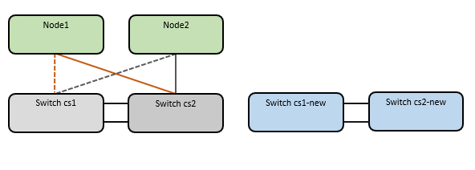
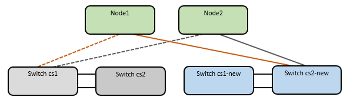
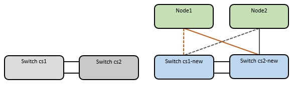

Get started
Get started
Migrate from an older Cisco switch to a Cisco Nexus 9336C-FX2 cluster switch
 Suggest changes
Suggest changes
You can migrate older Cisco cluster switches for an ONTAP cluster to Cisco Nexus 9336C-FX2 storage network switches. This is a non-disruptive procedure.
Review requirements
Ensure that:
-
Some of the ports on Nexus 9336C-FX2 switches are configured to run at 10GbE or 40GbE.
-
The 10GbE and 40GbE connectivity from nodes to Nexus 9336C-FX2 cluster switches have been planned, migrated, and documented.
-
The cluster is fully functioning (there should be no errors in the logs or similar issues).
-
Initial customization of the Cisco Nexus 9336C-FX2 switches is complete, so that:
-
9336C-FX2 switches are running the latest recommended version of software.
-
Reference Configuration Files (RCFs) have been applied to the switches.
-
Any site customization, such as DNS, NTP, SMTP, SNMP, and SSH, are configured on the new switches.
-
-
You have access to the switch compatibility table on the Cisco Ethernet Switches page for the supported ONTAP, NX-OS, and RCF versions.
-
You have reviewed the appropriate software and upgrade guides available on the Cisco web site for the Cisco switch upgrade and downgrade procedures at Cisco Nexus 9000 Series Switches Support page.

|
If you are changing the port speed of the e0a and e1a cluster ports on AFF A800 or AFF C800 systems, you might observe malformed packets being received after the speed conversion. See Bug 1570339 and the Knowledge Base article CRC errors on T6 ports after converting from 40GbE to 100GbE for guidance. |
Migrate the switches
The examples in this procedure use two nodes. These nodes use two 10GbE cluster interconnect ports e0a and e0b. See the Hardware Universe to verify the correct cluster ports on your platforms.
|
|
The command outputs might vary depending on the different releases of ONTAP. |
The examples in this procedure use the following switch and node nomenclature:
-
The names of the existing two Cisco switches are cs1 and cs2
-
The new Nexus 9336C-FX2 cluster switches are cs1-new and cs2-new.
-
The node names are node1 and node2.
-
The cluster LIF names are node1_clus1 and node1_clus2 for node 1, and node2_clus1 and node2_clus2 for node 2.
-
The cluster1::>* prompt indicates the name of the cluster.
During this procedure, refer to the following example:

The procedure requires the use of both ONTAP commands and Nexus 9000 Series Switches commands; ONTAP commands are used, unless otherwise indicated.
This procedure covers the following scenario:
-
Switch cs2 is replaced by switch cs2-new first.
-
Shut down the ports to the cluster nodes. All ports must be shut down simultaneously to avoid cluster instability.
-
Cabling between the nodes and cs2 are then disconnected from cs2 and reconnected to cs2-new.
-
-
Switch cs1 is replaced by switch cs1-new.
-
Shut down the ports to the cluster nodes. All ports must be shut down simultaneously to avoid cluster instability.
-
Cabling between the nodes and cs1 are then disconnected from cs1 and reconnected to cs1-new.
-
|
|
No operational inter-switch link (ISL) is needed during this procedure. This is by design because RCF version changes can affect ISL connectivity temporarily. To ensure non-disruptive cluster operations, the following procedure migrates all of the cluster LIFs to the operational partner switch while performing the steps on the target switch. |
Step 1: Prepare for migration
-
If AutoSupport is enabled on this cluster, suppress automatic case creation by invoking an AutoSupport message:
system node autosupport invoke -node * -type all -message MAINT=xhwhere x is the duration of the maintenance window in hours.
The AutoSupport message notifies technical support of this maintenance task so that automatic case creation is suppressed during the maintenance window. -
Change the privilege level to advanced, entering y when prompted to continue:
set -privilege advancedThe advanced prompt (*>) appears.
Step 2: Configure ports and cabling
-
On the new switches, confirm that the ISL is cabled and healthy between the switches cs1-new and cs2-new:
show port-channel summaryShow example
cs1-new# show port-channel summary Flags: D - Down P - Up in port-channel (members) I - Individual H - Hot-standby (LACP only) s - Suspended r - Module-removed b - BFD Session Wait S - Switched R - Routed U - Up (port-channel) p - Up in delay-lacp mode (member) M - Not in use. Min-links not met -------------------------------------------------------------------------------- Group Port- Type Protocol Member Ports Channel -------------------------------------------------------------------------------- 1 Po1(SU) Eth LACP Eth1/35(P) Eth1/36(P) cs2-new# show port-channel summary Flags: D - Down P - Up in port-channel (members) I - Individual H - Hot-standby (LACP only) s - Suspended r - Module-removed b - BFD Session Wait S - Switched R - Routed U - Up (port-channel) p - Up in delay-lacp mode (member) M - Not in use. Min-links not met -------------------------------------------------------------------------------- Group Port- Type Protocol Member Ports Channel -------------------------------------------------------------------------------- 1 Po1(SU) Eth LACP Eth1/35(P) Eth1/36(P) -
Display the cluster ports on each node that are connected to the existing cluster switches:
network device-discovery showShow example
cluster1::*> network device-discovery show -protocol cdp Node/ Local Discovered Protocol Port Device (LLDP: ChassisID) Interface Platform ----------- ------ ------------------------- ---------------- ---------------- node1 /cdp e0a cs1 Ethernet1/1 N5K-C5596UP e0b cs2 Ethernet1/2 N5K-C5596UP node2 /cdp e0a cs1 Ethernet1/1 N5K-C5596UP e0b cs2 Ethernet1/2 N5K-C5596UP -
Determine the administrative or operational status for each cluster port.
-
Verify that all the cluster ports are up with a healthy status:
network port show -ipspace ClusterShow example
cluster1::*> network port show -ipspace Cluster Node: node1 Ignore Speed(Mbps) Health Health Port IPspace Broadcast Domain Link MTU Admin/Oper Status Status --------- ------------ ---------------- ---- ---- ----------- -------- ------ e0a Cluster Cluster up 9000 auto/10000 healthy false e0b Cluster Cluster up 9000 auto/10000 healthy false Node: node2 Ignore Speed(Mbps) Health Health Port IPspace Broadcast Domain Link MTU Admin/Oper Status Status --------- ------------ ---------------- ---- ---- ----------- -------- ------ e0a Cluster Cluster up 9000 auto/10000 healthy false e0b Cluster Cluster up 9000 auto/10000 healthy false -
Verify that all the cluster interfaces (LIFs) are on their home ports:
network interface show -vserver ClusterShow example
cluster1::*> network interface show -vserver Cluster Logical Status Network Current Current Is Vserver Interface Admin/Oper Address/Mask Node Port Home ----------- ----------- ---------- ------------------ ----------- ------- ---- Cluster node1_clus1 up/up 169.254.209.69/16 node1 e0a true node1_clus2 up/up 169.254.49.125/16 node1 e0b true node2_clus1 up/up 169.254.47.194/16 node2 e0a true node2_clus2 up/up 169.254.19.183/16 node2 e0b true -
Verify that the cluster displays information for both cluster switches:
system cluster-switch show -is-monitoring-enabled-operational trueShow example
cluster1::*> system cluster-switch show -is-monitoring-enabled-operational true Switch Type Address Model --------------------------- ------------------ ---------------- --------------- cs1 cluster-network 10.233.205.92 N5K-C5596UP Serial Number: FOXXXXXXXGS Is Monitored: true Reason: None Software Version: Cisco Nexus Operating System (NX-OS) Software, Version 9.3(4) Version Source: CDP cs2 cluster-network 10.233.205.93 N5K-C5596UP Serial Number: FOXXXXXXXGD Is Monitored: true Reason: None Software Version: Cisco Nexus Operating System (NX-OS) Software, Version 9.3(4) Version Source: CDP
-
-
Disable auto-revert on the cluster LIFs.
network interface modify -vserver Cluster -lif * -auto-revert false -
On cluster switch cs2, shut down the ports connected to the cluster ports of the nodes in order to fail over the cluster LIFs:
cs2(config)# interface eth1/1-1/2 cs2(config-if-range)# shutdown
-
Verify that the cluster LIFs have failed over to the ports hosted on cluster switch cs1. This might take a few seconds.
network interface show -vserver ClusterShow example
cluster1::*> network interface show -vserver Cluster Logical Status Network Current Current Is Vserver Interface Admin/Oper Address/Mask Node Port Home ----------- ------------- ---------- ------------------ ---------- ------- ---- Cluster node1_clus1 up/up 169.254.3.4/16 node1 e0a true node1_clus2 up/up 169.254.3.5/16 node1 e0a false node2_clus1 up/up 169.254.3.8/16 node2 e0a true node2_clus2 up/up 169.254.3.9/16 node2 e0a false -
Verify that the cluster is healthy:
cluster showShow example
cluster1::*> cluster show Node Health Eligibility Epsilon ---------- ------- ------------- ------- node1 true true false node2 true true false
-
Move all cluster node connection cables from the old cs2 switch to the new cs2-new switch.
Cluster node connection cables moved to the cs2-new switch

-
Confirm the health of the network connections moved to cs2-new:
network port show -ipspace ClusterShow example
cluster1::*> network port show -ipspace Cluster Node: node1 Ignore Speed(Mbps) Health Health Port IPspace Broadcast Domain Link MTU Admin/Oper Status Status --------- ------------ ---------------- ---- ---- ----------- -------- ------ e0a Cluster Cluster up 9000 auto/10000 healthy false e0b Cluster Cluster up 9000 auto/10000 healthy false Node: node2 Ignore Speed(Mbps) Health Health Port IPspace Broadcast Domain Link MTU Admin/Oper Status Status --------- ------------ ---------------- ---- ---- ----------- -------- ------ e0a Cluster Cluster up 9000 auto/10000 healthy false e0b Cluster Cluster up 9000 auto/10000 healthy falseAll cluster ports that were moved should be up.
-
Check neighbor information on the cluster ports:
network device-discovery show -protocol cdpShow example
cluster1::*> network device-discovery show -protocol cdp Node/ Local Discovered Protocol Port Device (LLDP: ChassisID) Interface Platform ----------- ------ ------------------------- ------------- -------------- node1 /cdp e0a cs1 Ethernet1/1 N5K-C5596UP e0b cs2-new Ethernet1/1/1 N9K-C9336C-FX2 node2 /cdp e0a cs1 Ethernet1/2 N5K-C5596UP e0b cs2-new Ethernet1/1/2 N9K-C9336C-FX2Verify that the moved cluster ports see the cs2-new switch as the neighbor.
-
Confirm the switch port connections from switch cs2-new's perspective:
cs2-new# show interface brief cs2-new# show cdp neighbors
-
On cluster switch cs1, shut down the ports connected to the cluster ports of the nodes in order to fail over the cluster LIFs. The following example uses the interface example output from step 7.
cs1(config)# interface eth1/1-1/2 cs1(config-if-range)# shutdown
All cluster LIFs will move to the cs2-new switch.
-
Verify that the cluster LIFs have failed over to the ports hosted on switch cs2-new. This might take a few seconds:
network interface show -vserver ClusterShow example
cluster1::*> network interface show -vserver Cluster Logical Status Network Current Current Is Vserver Interfac Admin/Oper Address/Mask Node Port Home ----------- ------------ ---------- ------------------ ----------- ------- ---- Cluster node1_clus1 up/up 169.254.3.4/16 node1 e0b false node1_clus2 up/up 169.254.3.5/16 node1 e0b true node2_clus1 up/up 169.254.3.8/16 node2 e0b false node2_clus2 up/up 169.254.3.9/16 node2 e0b true -
Verify that the cluster is healthy:
cluster showShow example
cluster1::*> cluster show Node Health Eligibility Epsilon ---------- ------- ------------- ------- node1 true true false node2 true true false
-
Move the cluster node connection cables from cs1 to the new cs1-new switch.
Cluster node connection cables moved to the cs1-new switch

-
Confirm the health of the network connections moved to cs1-new:
network port show -ipspace ClusterShow example
cluster1::*> network port show -ipspace Cluster Node: node1 Ignore Speed(Mbps) Health Health Port IPspace Broadcast Domain Link MTU Admin/Oper Status Status --------- ------------ ---------------- ---- ---- ----------- -------- ------ e0a Cluster Cluster up 9000 auto/10000 healthy false e0b Cluster Cluster up 9000 auto/10000 healthy false Node: node2 Ignore Speed(Mbps) Health Health Port IPspace Broadcast Domain Link MTU Admin/Oper Status Status --------- ------------ ---------------- ---- ---- ----------- -------- ------ e0a Cluster Cluster up 9000 auto/10000 healthy false e0b Cluster Cluster up 9000 auto/10000 healthy falseAll cluster ports that were moved should be up.
-
Check neighbor information on the cluster ports:
network device-discovery showShow example
cluster1::*> network device-discovery show -protocol cdp Node/ Local Discovered Protocol Port Device (LLDP: ChassisID) Interface Platform ----------- ------ ------------------------- -------------- -------------- node1 /cdp e0a cs1-new Ethernet1/1/1 N9K-C9336C-FX2 e0b cs2-new Ethernet1/1/2 N9K-C9336C-FX2 node2 /cdp e0a cs1-new Ethernet1/1/1 N9K-C9336C-FX2 e0b cs2-new Ethernet1/1/2 N9K-C9336C-FX2Verify that the moved cluster ports see the cs1-new switch as the neighbor.
-
Confirm the switch port connections from switch cs1-new's perspective:
cs1-new# show interface brief cs1-new# show cdp neighbors
-
Verify that the ISL between cs1-new and cs2-new is still operational:
show port-channel summaryShow example
cs1-new# show port-channel summary Flags: D - Down P - Up in port-channel (members) I - Individual H - Hot-standby (LACP only) s - Suspended r - Module-removed b - BFD Session Wait S - Switched R - Routed U - Up (port-channel) p - Up in delay-lacp mode (member) M - Not in use. Min-links not met -------------------------------------------------------------------------------- Group Port- Type Protocol Member Ports Channel -------------------------------------------------------------------------------- 1 Po1(SU) Eth LACP Eth1/35(P) Eth1/36(P) cs2-new# show port-channel summary Flags: D - Down P - Up in port-channel (members) I - Individual H - Hot-standby (LACP only) s - Suspended r - Module-removed b - BFD Session Wait S - Switched R - Routed U - Up (port-channel) p - Up in delay-lacp mode (member) M - Not in use. Min-links not met -------------------------------------------------------------------------------- Group Port- Type Protocol Member Ports Channel -------------------------------------------------------------------------------- 1 Po1(SU) Eth LACP Eth1/35(P) Eth1/36(P)
Step 3: Verify the configuration
-
Enable auto-revert on the cluster LIFs.
network interface modify -vserver Cluster -lif * -auto-revert true -
Verify that the cluster LIFs have reverted to their home ports (this might take a minute):
network interface show -vserver ClusterIf the cluster LIFs have not reverted to their home port, manually revert them:
network interface revert -vserver Cluster -lif * -
Verify that the cluster is healthy:
cluster show -
Verify the connectivity of the remote cluster interfaces:
You can use the network interface check cluster-connectivity command to start an accessibility check for cluster connectivity and then display the details:
network interface check cluster-connectivity start and network interface check cluster-connectivity show
cluster1::*> network interface check cluster-connectivity start
NOTE: Wait for a number of seconds before running the show command to display the details.
cluster1::*> network interface check cluster-connectivity show
Source Destination Packet
Node Date LIF LIF Loss
------ -------------------------- --------------- ----------------- -----------
node1
3/5/2022 19:21:18 -06:00 node1_clus2 node2_clus1 none
3/5/2022 19:21:20 -06:00 node1_clus2 node2_clus2 none
node2
3/5/2022 19:21:18 -06:00 node2_clus2 node1_clus1 none
3/5/2022 19:21:20 -06:00 node2_clus2 node1_clus2 none
For all ONTAP releases, you can also use the cluster ping-cluster -node <name> command to check the connectivity:
cluster ping-cluster -node <name>
cluster1::*> cluster ping-cluster -node node2
Host is node2
Getting addresses from network interface table...
Cluster node1_clus1 169.254.209.69 node1 e0a
Cluster node1_clus2 169.254.49.125 node1 e0b
Cluster node2_clus1 169.254.47.194 node2 e0a
Cluster node2_clus2 169.254.19.183 node2 e0b
Local = 169.254.47.194 169.254.19.183
Remote = 169.254.209.69 169.254.49.125
Cluster Vserver Id = 4294967293
Ping status:
....
Basic connectivity succeeds on 4 path(s)
Basic connectivity fails on 0 path(s)
................
Detected 9000 byte MTU on 4 path(s):
Local 169.254.19.183 to Remote 169.254.209.69
Local 169.254.19.183 to Remote 169.254.49.125
Local 169.254.47.194 to Remote 169.254.209.69
Local 169.254.47.194 to Remote 169.254.49.125
Larger than PMTU communication succeeds on 4 path(s)
RPC status:
2 paths up, 0 paths down (tcp check)
2 paths up, 0 paths down (udp check)
Enable the Ethernet switch health monitor log collection feature for collecting switch-related log files, using the following two commands: system switch ethernet log setup-password and system switch ethernet log enable-collection
NOTE: You will need the password for the admin user on the switches.
Enter: system switch ethernet log setup-password
cluster1::*> system switch ethernet log setup-password
Enter the switch name: <return>
The switch name entered is not recognized.
Choose from the following list:
cs1-new
cs2-new
cluster1::*> system switch ethernet log setup-password
Enter the switch name: cs1-new
RSA key fingerprint is e5:8b:c6:dc:e2:18:18:09:36:63:d9:63:dd:03:d9:cc
Do you want to continue? {y|n}::[n] y
Enter the password: <password of switch's admin user>
Enter the password again: <password of switch's admin user>
cluster1::*> system switch ethernet log setup-password
Enter the switch name: cs2-new
RSA key fingerprint is 57:49:86:a1:b9:80:6a:61:9a:86:8e:3c:e3:b7:1f:b1
Do you want to continue? {y|n}:: [n] y
Enter the password: <password of switch's admin user>
Enter the password again: <password of switch's admin user>
Followed by: system switch ethernet log enable-collection
cluster1::*> system switch ethernet log enable-collection
Do you want to enable cluster log collection for all nodes in the cluster?
{y|n}: [n] y
Enabling cluster switch log collection.
cluster1::*>
NOTE: If any of these commands return an error, contact NetApp support.
Enable the Ethernet switch health monitor log collection feature for collecting switch-related log files, using the commands: system cluster-switch log setup-password and system cluster-switch log enable-collection
NOTE: You will need the password for the admin user on the switches.
Enter: system cluster-switch log setup-password
cluster1::*> system cluster-switch log setup-password
Enter the switch name: <return>
The switch name entered is not recognized.
Choose from the following list:
cs1-new
cs2-new
cluster1::*> system cluster-switch log setup-password
Enter the switch name: cs1-new
RSA key fingerprint is e5:8b:c6:dc:e2:18:18:09:36:63:d9:63:dd:03:d9:cc
Do you want to continue? {y|n}::[n] y
Enter the password: <password of switch's admin user>
Enter the password again: <password of switch's admin user>
cluster1::*> system cluster-switch log setup-password
Enter the switch name: cs2-new
RSA key fingerprint is 57:49:86:a1:b9:80:6a:61:9a:86:8e:3c:e3:b7:1f:b1
Do you want to continue? {y|n}:: [n] y
Enter the password: <password of switch's admin user>
Enter the password again: <password of switch's admin user>
Followed by: system cluster-switch log enable-collection
cluster1::*> system cluster-switch log enable-collection
Do you want to enable cluster log collection for all nodes in the cluster?
{y|n}: [n] y
Enabling cluster switch log collection.
cluster1::*>
NOTE: If any of these commands return an error, contact NetApp support.